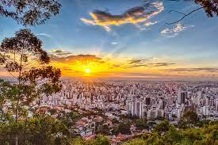
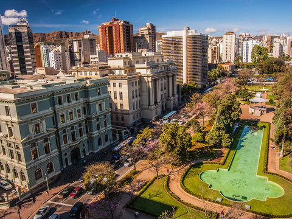

Patrimônio Histórico e Cultural: Belo Horizonte preserva um valioso patrimônio histórico e cultural, com monumentos, igrejas e museus que contam a história da região. O Conjunto Arquitetônico da Pampulha, projetado por Oscar Niemeyer, e o Museu de Arte da Pampulha são exemplos emblemáticos desse rico legado.
Gastronomia Mineira: A culinária mineira é uma das mais reconhecidas e apreciadas do Brasil, e Belo Horizonte é um verdadeiro paraíso gastronômico. Com pratos típicos como o feijão tropeiro, o pão de queijo e o tutu à mineira, a cidade oferece uma experiência gastronômica única, com restaurantes e bares tradicionais espalhados por seus bairros.
Parques e Áreas Verdes: Belo Horizonte é cercada por uma exuberante natureza, com parques e áreas verdes que proporcionam momentos de lazer e contemplação. O Parque Municipal, o Parque das Mangabeiras e o Parque Estadual da Serra do Curral são destinos populares para atividades ao ar livre e contato com a natureza.
Cultura e Arte: A cidade abriga uma efervescente cena cultural, com teatros, cinemas, galerias de arte e espaços culturais que promovem diversas manifestações artísticas. O Palácio das Artes, o Teatro Municipal e o Centro Cultural Banco do Brasil são importantes centros de cultura e entretenimento em Belo Horizonte.
Educação e Pesquisa: Belo Horizonte é um importante polo educacional e de pesquisa, com diversas universidades e instituições de ensino superior, como a Universidade Federal de Minas Gerais (UFMG) e a Pontifícia Universidade Católica de Minas Gerais (PUC-MG). Essas instituições contribuem para o desenvolvimento acadêmico e científico da cidade e do país.
Hospitalidade e Turismo: Belo Horizonte recebe milhares de turistas todos os anos, atraídos por sua cultura, gastronomia e belezas naturais. A cidade oferece uma variedade de opções de hospedagem, desde hotéis luxuosos até pousadas charmosas, garantindo uma estadia confortável e acolhedora para seus visitantes.
Qualidade de Vida: Com uma infraestrutura urbana bem desenvolvida, serviços públicos eficientes e baixos índices de violência, Belo Horizonte proporciona uma excelente qualidade de vida para seus moradores. A cidade oferece uma variedade de espaços de lazer, saúde e educação, tornando-se um local atrativo para quem busca uma vida tranquila e equilibrada.
Tradições e Festas Populares: As tradições e festas populares são parte integrante da cultura de Belo Horizonte. Eventos como o Carnaval, a Festa Junina e o Festival Gastronômico celebram a identidade e a riqueza cultural da região, reunindo moradores e visitantes em momentos de celebração e diversão.
Inovação e Empreendedorismo: Belo Horizonte é um importante polo de inovação e empreendedorismo, com startups e empresas que estão se destacando nos mais diversos setores da economia. A cidade oferece um ambiente propício para o desenvolvimento de novos negócios e ideias, impulsionando o crescimento econômico e a geração de empregos na região.
Diversidade Cultural e Social: Belo Horizonte é uma cidade marcada pela diversidade cultural e social, com uma população acolhedora e hospitaleira. Essa diversidade se reflete na música, na culinária, nas festas populares e nas manifestações artísticas que tornam a cidade ainda mais rica e interessante.
